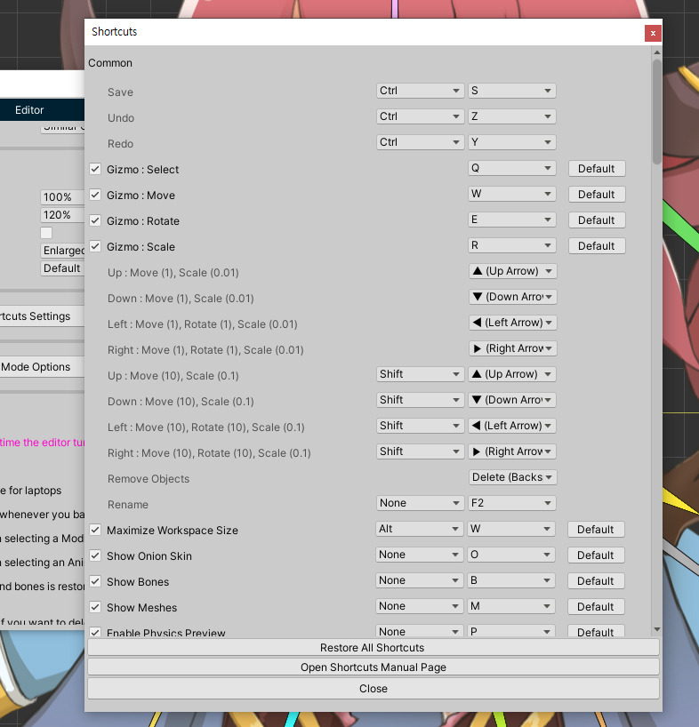

AnyPortrait > 메뉴얼 > 단축키 사용자 설정
단축키 사용자 설정
1.3.0
AnyPortrait 에디터에서 사용되는 단축키들을 확인하거나 자신에게 맞게 변경하고자 할 필요가 있을 수 있습니다.
이 페이지에서는 에디터에서 사용되는 단축키들을 확인하고 변경하는 방법에 대해서 다룹니다.

(1) AnyPortrait 에디터에서 설정 다이얼로그를 엽니다.
(2) Editor 탭을 선택합니다.
(3) Shortcuts Settings 버튼을 누릅니다.

에디터에서 사용되는 모든 단축키들을 볼 수 있습니다.

1. 단축키 목록 : 기능들에 대한 단축키 목록입니다.
2. Restore All Shortcuts : 단축키 설정을 모두 초기화합니다.
3. Open Shortcuts Manual Page : 단축키 목록을 소개하는 메뉴얼 웹페이지를 엽니다.
4. Close : 다이얼로그를 닫습니다.

단축키 설정 화면에 관한 설명입니다.
일부 단축키는 수정이 불가능합니다.
1. 단축키 사용 여부 : 비활성화하면 해당 단축키는 동작하지 않습니다.
2. 기능 이름 : 단축키에 해당하는 기능의 이름입니다.
3. 특수키 : Ctrl, Alt, Shift와 같은 특수키를 설정할 수 있습니다. 일부 기능에는 특수키를 설정할 수 없는데, 이 경우엔 특수키 입력 여부에 상관없이 동작합니다.
4. 입력키 : 입력키입니다.
5. Default 버튼 : 기본 설정으로 되돌립니다.

만약 입력 키가 다른 단축키와 동일하다면 위와 같은 경고 메시지가 나타납니다.
겹치지 않도록 적절하게 설정해주세요.